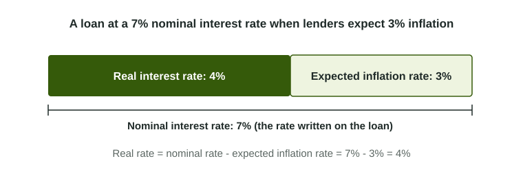

An interest rate tells you how many more dollars you get back. It does not tell you what those dollars will buy. Inflation sits between the two, and the exam tests whether you keep them apart: the rate in dollars is the nominal rate, and the rate in buying power is the real rate.
Two rates on the same loan
The nominal interest rate is the rate stated on a loan, a bond or a bank account, in dollars. Lend $100 at 7% and you get $107 back in a year.
The real interest rate is the gain in buying power. If prices rise 3% over that year, the $107 buys only about 4% more than the $100 did. Lenders and borrowers agree on a loan before they know what inflation will be, so they work with the inflation they expect:

Worked example: real and nominal rates. A one-year loan carries a 7% nominal rate, and both sides expect 3% inflation.
- Expected real rate: . The lender expects a 4% gain in buying power.
- If inflation turns out to be 6%: the real rate actually earned is . The lender gained far less buying power than planned.
- Going the other way: a lender who wants a 2% real return and expects 4% inflation charges a nominal rate of .
The method: write down the nominal rate, then subtract inflation, the expected rate when the loan is made, the actual rate when you look back. Real rates can be zero or negative: a 4% loan with 5% inflation earns -1% real.
Lenders build inflation into nominal rates
Because lenders care about buying power, they add the inflation they expect to the real return they want. When people come to expect more inflation, nominal interest rates rise even if the real return lenders want has not changed. That is why countries with high and rising inflation have high nominal interest rates. The table shows why comparing nominal rates alone can mislead.
| Loan | Nominal rate | Expected inflation rate | Real rate |
|---|---|---|---|
| In a low-inflation economy | 4% | 1% | 3% |
| In a high-inflation economy | 10% | 12% | -2% |
The 10% loan pays more dollars but loses buying power. Borrowers make the same comparison: a firm deciding whether to borrow for new equipment cares about the real rate, because inflation also raises the prices it sells at.
When inflation surprises: who gains and who loses
You met this idea with the costs of inflation; now you can measure it. A fixed nominal rate locks in the dollars. If inflation turns out higher than expected, the real rate actually paid is lower than agreed:
- Borrowers with fixed rates gain: they repay with dollars that buy less than they expected.
- Lenders lose: banks holding fixed-rate loans and savers holding fixed-rate bonds get back less buying power.
If inflation turns out lower than expected, or prices fall, the real rate is higher than agreed, so lenders gain and borrowers lose. Inflation that everyone expected moves no buying power, because it was built into the nominal rate. Lenders who fear surprises use variable rates that adjust with inflation.
A common slip is to add inflation to the nominal rate to get the real rate, or to say unexpected inflation helps lenders "because prices are higher." Subtract inflation, and remember that the lender is repaid in dollars worth less.
For your exam
- Real = nominal - expected inflation rate; nominal = real + expected inflation rate. Show the subtraction.
- Name the direction for each side: "the borrower gains and the lender loses, because the real interest rate fell."
- Later graphs in this unit label their axis with one rate or the other. Check which one before you draw.